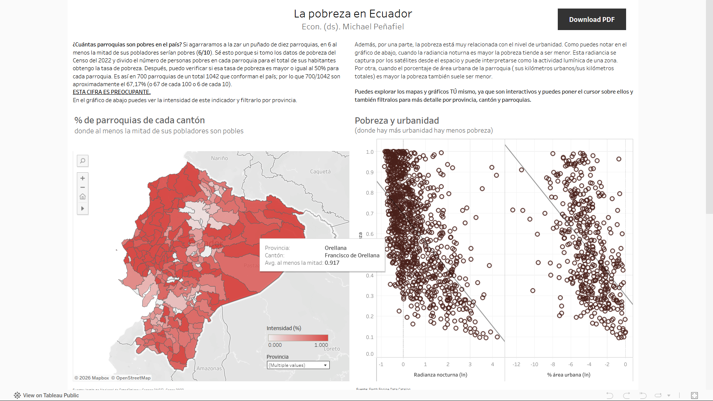

¿Qué es la estadística?#
Mientras bajo las gradas del metro de mi ciudad: Quito, la capital de Ecuador, pienso cómo explicarle qué es la estadística y en qué puede usarla en su vida diaria o profesional para su beneficio.
El fin de la estadística son las decisiones. De hecho, los humanos ideamos la estadística para estudiar problemas, originalmente del Estado.
Wikipedia dice, por ejemplo, este 26 de marzo, a la 1y25 p. m.:
El término alemán Statistik, introducido originalmente por Gottfried Achenwall en 1749, se refería al análisis de datos del Estado, es decir, la «ciencia del Estado» (o más bien, de la ciudad-estado). También se llamó aritmética política de acuerdo con la traducción literal del inglés. No fue hasta el siglo XIX cuando el término estadística adquirió el significado de recolectar y clasificar datos. Este concepto fue introducido por el agrónomo y estadista escocés sir John Sinclair (1754-1835).
Los gobernantes entendieron en algún punto de la historia que contar a sus pobladores; cuántos de estos eran de uno y otro sexo; qué edades tenían; dónde vivían, entre otras cuestiones, podía resultarles útil para gobernar —tal vez al inicio sobre todo para cobrarles impuestos que mantuvieran sus onerosos niveles de vida. Pronto se volvió habitual recoger datos, esto es: registrar algún fenómeno. Por ejemplo, yo podría preguntarle cuál es su edad y escribir su respuesta en un archivo. Si le pregunto a todos los habitantes de su país los estaría censando. Los censos hacen justamente eso: preguntan y documentan varias características de la población.
Algunos datos son sumamente importantes para manejar presupuestos del gobierno, por ejemplo: la cantidad de niños recién nacidos que mueren. La mortalidad infantil es un asunto moral, que a todos nos importa (quizá con excepción de algún que otro loco). Saber cuántos niños mueren es importante para saber cuánto dinero destinar a luchar contra esa problemática.
La parte de la matemáticas que se ocupa de la recolección, la organización, el análisis y la interpretación de los datos es la estadística. Entonces, hacemos estadística cuando recolectamos datos de un grupo de personas, hacemos registros de las fallas de un sistema, registramos nuestros gastos e ingresos o observamos algún fenómeno físico y lo documentamos.
¿Por qué recolectar datos sería útil o importante?, puede preguntarse un principiante. Bueno, vamos a ser directos con un ejemplo: ¿por qué sería importante saber cuántos clientes he perdido el último mes, si fuera un comerciante o empresario? Porque así sabría si estoy fracasando o algo en el entorno económico está siendo problemático para mis negocios. Me permitirá pensar en una solución, en una decisión, en una estrategia. Las empresas actuales gastan una gran cantidad de dinero recolectando datos de usted, así que hágase una idea del valor que tienen las estadísticas y los datos.
Cuando usted utiliza una red social está ofreciendo datos: cuánto tiempo mira un video, qué tipo de video mira, qué le gusta, qué compraría, las sugerencias de compra de quién tomaría. Todos esos datos que usted ofrece le interesan a empresas, que los analizan con sus equipos de análisis de datos; integradis por matemáticos, estadísticos, economistas y, ahora, científicos de datos, entre otros profesionales con conocimientos matemáticos y estadísticos. Ellos les dan sugerencias a las empresas, al gobierno y a organizaciones en general de qué sería estratégico, conveniente o rentable. Por eso, los dueños de esas redes sociales que maneja están dispuestos a no “cobrarles” por su uso. Usé comillas, porque como se habrá dado cuenta a estas alturas, le están cobrando, de hecho. Y usted les está pagando.
Además, podemos considerar un arte hacer estadística: lo buenos que somos analizando datos, formulando las preguntas importantes para examinar esos datos o comunicar la importancia de tomar una decisión basándonos en rigurosos análisis de esos datos. Usted, señor lector, será un artesano, y tiene que ser uno bueno, por su puesto, si quiere ganarse buenos beneficios por su oficio artesanal.
Fenómenos estocásticos#
De acuerdo, pero la estadística tiene un componente aleatorio. Obtener datos puede ser caro y, en realidad, lo es. Por eso, su gobierno lo censa cada 10 años, las empresas no le preguntan cada día ni cada hora qué piensa de cada parte de sus productos o servicios. Las organizaciones se centran en lo más importante. Gastan dinero en la recolección de datos de características indispensables.
Si yo quiero saber por qué candidato a alcalde votarán las personas, sería muy complicado preguntarle a todos los ciudadanos —y en consecuencia muy costoso. Así que quiero deducir cómo votarán todos los ciudadanos. Necesito datos. Una pésima idea sería preguntarle a mis familiares y amigos, porque estaría obteniendo información de cómo votarán mis familiares y amigos, no todas las personas de la ciudad. Veremos adelante por qué es muy mala idea. De momento, digamos que usted enumera a cada ciudadano y luego agita sus números en una urna. Decide tomar 100 de esos números y preguntarles por quién votarán a esos cien ciudadanos, como en una lotería. Así se hace una idea de cómo votarán en su ciudad. Note que el hecho de hacer aleatoria la selección, es decir: el azar revoloteará el asunto. Aleatorio es sinónimo de estocástico, un término común de uso estadístico.
Es muy importante hacer aleatorizaciones como estas para asegurar la calidad de las inferencias, es decir, de las conclusiones que obtenemos a partir de los datos. En los siguientes capítulos comprenderemos a detalle por qué. Por ahora, basta con entender que la aleatorización es fundamental para que las conclusiones que obtengamos sean válidas.
Más allá de eso, no podemos saber con certeza algunas cosas. Si tiene una moneda en su bolsillo, láncela al aire, tómela en la caída y mire qué cara observa. Usted no sabe cuál será el resulatdo con certeza, sino cuál puede ser el resultado. Seguramente ya ha oído que tiene un 50% por ciento de probabilidad de obtener una de las dos caras de la moneda. Ocurre igual cuando lanza un dado, tiene una probabilidad de obtener una cara del dado. La estadística se ocupa de ambos asuntos: del hecho de tener que hacer inferencias de una población usando una muestra y de usar datos de fenómenos estocásticos, como lanzar dados y monedas al aire, o más importante: de fenómenos estocásticos que ocurren en la vida real. Por ejemplo, las probabilidades de que una inversión sea exitosa, llueva mañana o su equipo de fútbol gane el próximo partido.
Con el propósito de tomar decisiones hacemos estadísticas.
Resumen
la estadística se ocupa de la recolección, la organización, el análisis y la interpretación de los datos. Los datos pueden ser de fenómenos determinísticos o estocásticos. Los fenómenos determinísticos son aquellos que podemos predecir con certeza, mientras que los fenómenos estocásticos son aquellos que no podemos predecir con certeza. La estadística se ocupa de ambos asuntos. Por costos e incertidumbre, es sumamente importante en el caso de los fenómenos estocásticos.
Métodos gráficos#
Plantémonso un problema: entender la pobreza de Ecuador. ¿Cómo podríamos hacerlo?
Usaremos una tabla de datos que construí con datos del Instituto Nacional de Estadística y Censos de Ecuador (INEC), datos geoespaciales de radiancia nocturna, datos de suelo urbano, entre otros. Pueden obtenerse en mi repositorio de GitHub Michaeljo112/Estimando-la-pobreza-parroquial.
Cada fila es una parroquia del país. En análisis de datos solemos identificar una unidad de observación (lemento básico sobre el cual se recolectan datos) con códigos (sean numéricos o cadenas de textos, o una cambinación de ambos) que denominamos identificadores únicos. En este caso, el identificador de cada parroquia es su código postal.
import pandas as pd
url = "https://raw.githubusercontent.com/Michaeljo112/Estimando-la-pobreza-parroquial/main/datos22.xlsx"
df = pd.read_excel(url, sheet_name='data', index_col=None)
df.head()
| ADM3_PCODE | Año | viirs | pop | m2_auo | edi | crts | dt | ct | ds | ... | ndvi | mndwi | area | icl | Provincia | Cantón | Parroquia | Personas | No pobres | Pobres | |
|---|---|---|---|---|---|---|---|---|---|---|---|---|---|---|---|---|---|---|---|---|---|
| 0 | EC010155 | 2022 | 2.048737 | 6006 | 1.068972e+06 | 0 | 209 | 0.000529 | 11.0 | 0.131868 | ... | 0.483085 | -0.392392 | 9.345615e+07 | inf | Azuay | Cuenca | Chiquintad | 5738 | 3910 | 1828 |
| 1 | EC010360 | 2022 | 2.771702 | 765 | 3.404005e+05 | 0 | 35 | 0.001965 | 1.0 | 0.000000 | ... | 0.457337 | -0.351759 | 1.193668e+07 | inf | Azuay | Gualaceo | Simón Bolívar | 732 | 349 | 383 |
| 2 | EC010451 | 2022 | 0.999276 | 3118 | 2.974884e+06 | 0 | 154 | 0.000343 | 4.0 | 0.000000 | ... | 0.432284 | -0.366051 | 1.104506e+08 | inf | Azuay | Nabón | Cochapata | 2981 | 820 | 2161 |
| 3 | EC010556 | 2022 | 1.476319 | 734 | 2.480622e+05 | 0 | 67 | 0.000887 | 2.0 | 0.000000 | ... | 0.525941 | -0.292900 | 3.610658e+07 | inf | Azuay | Paute | Guarainag | 701 | 389 | 312 |
| 4 | EC011152 | 2022 | 2.999582 | 1960 | 4.415597e+05 | 0 | 41 | 0.001541 | 2.0 | 0.000000 | ... | 0.509769 | -0.303098 | 1.367559e+07 | inf | Azuay | Chordeleg | La Unión | 1875 | 928 | 947 |
5 rows × 23 columns
Los datos tienen una columna llamada “Pobres” que es el recuento porcentaje de personas pobres de cada parroquia. “Personas” es la cantidad de personas de cada parroquia. “No pobres” es el recuento de personas no pobres de cada parroquia. Construyemos un resumen estadístico.
Variables#
Una variable es una característica, atributo, propiedad, medida o detalle de la unidad de observación. Es un dato, digamos. Una parroquia pertenece a un cantón (variable), a una provincia (variable), tiene una cantidad de personas pobres (variable), una cantidad de personas no pobres (variable), una cantidad de personas (variable), etc.
Indicadores#
Un indicador resume un fenómeno. Por ejemplo, el porcentaje de personas pobres resume la pobreza de una parroquia. Usemos un indicador para resumir la pobreza de Ecuador.
Construyamos una variable que sea una medida de la pobreza. Si divido la cantidad personas pobres para la cantidad de personas en el país, obtengo el porcentaje de personas pobres. En nuestros datos, debo dividir la cantidad de personas pobres para la cantidad de personas en cada parroquia. El resulatdo de la división es la tasa de pobreza de la parroquia, y es un número entre 0 y 1, un porcentaje. Luego de cada explicación, insertaré el código en Python que puedes usar para hacer lo mismo.
df['Tasa de pobreza'] = df['Pobres']/df['Personas']
Vamos un poco más allá, qué tal si ahora creo una columna que indique si al menos la mitad de personas de una parroquia es pobre.
import numpy as np
df['almenoslamitadpobre'] = np.where(df['Tasa de pobreza'] >= .5, 1, 0)
Cuando clasificamos en 1 y 0 los valores de una variable, basándonos en una condición como la anterior, estamos creando una variable dicotómica o dummy ―si prefieres anglisismos, yo no. En este caso, la condición es que la tasa de pobreza sea mayor o igual a 0,5 (en inglés, que se usa en python por defecto, los decimales se separan con punto y en español por coma).
Un cantón tiene varias parroquias. Pensemos en un cantón, por ejemplo, el cantón Espejo. Este cantón tiene 4 parroquias. Los valores para cada una son 0, 0, 1 y 0.
espejo = df[df['Cantón'] == 'Espejo'][['Parroquia', 'almenoslamitadpobre']]
espejo
| Parroquia | almenoslamitadpobre | |
|---|---|---|
| 119 | El Ángel | 0 |
| 138 | San Isidro | 0 |
| 514 | El Goaltal | 1 |
| 515 | La Libertad | 0 |
Es decir, en una de las cuatro parroquias al menos la mitad de personas es pobre. Si sumamos los valores de la columna “almenoslamitadpobre” obtenemos 1. 1 de 4 parroquias del cantón son pobres. Expresado como porcentaje es 1/4 = 0.25; o sea, el 25% de las parroquias del cantón Espejo tiene al menos la mitad de personas pobres.
espejo['almenoslamitadpobre'].sum()/4
np.float64(0.25)
Media o promedio#
Un promedio distribuye un valor para la cantidad de observaciones. Por ejemplo, si tomo a 4 personas (unidades de observación) y les pregunto sus salarios, y obtengo 100, 200, 300 y 400 dólares, el promedio es (100+200+300+400)/4 = 250 dólares. Es decir, el promedio es una forma aritmética de distruir la suma para la cantidad de observaciones. En este caso, si todos ganaran igual, ganarían 250 dólares. En este sentido, la media es una forma de repartir un pastel en partes iguales.
En nuestro cálculo anterior, calculamos un promedio o media.
Cuando promediamos una variable dicotómica, como “almenoslamitadpobre”, estamos contando cuántas unidades de observación, en nuestro caso parroquias, cumplen la propiedad; posteriormnete, calculamos cuánto representa ese conteo del total de observaciones.
Ahora, calculemos la media de almenoslamitadpobre por cantón. Esto, en la práctica, será calcular el porcentaje de parroquias donde la mitad de sus poblaciones es pobre.
resumenindicador = df.groupby(['Provincia', 'Cantón'])['almenoslamitadpobre'].mean().reset_index(name='indicador_pobreza')
resumenindicador.head()
| Provincia | Cantón | indicador_pobreza | |
|---|---|---|---|
| 0 | Azuay | Camilo Ponce Enríquez | 0.000000 |
| 1 | Azuay | Chordeleg | 0.200000 |
| 2 | Azuay | Cuenca | 0.272727 |
| 3 | Azuay | El Pan | 0.000000 |
| 4 | Azuay | Girón | 0.000000 |
Con nuestro indicador, nos hacemos una buena idea de la pobreza. Ahora podríamos ordenar los cantones por este indicador. Ordenar así los cantones sería rankearlos por su pobreza.
resumenindicador.sort_values(by='indicador_pobreza', ascending=False)
| Provincia | Cantón | indicador_pobreza | |
|---|---|---|---|
| 7 | Azuay | Nabón | 1.0 |
| 10 | Azuay | Pucará | 1.0 |
| 16 | Bolívar | Chillanes | 1.0 |
| 20 | Bolívar | Las Naves | 1.0 |
| 78 | Guayas | Balzar | 1.0 |
| ... | ... | ... | ... |
| 190 | Pichincha | San Miguel de los Bancos | 0.0 |
| 204 | Tungurahua | Baños de Agua Santa | 0.0 |
| 211 | Tungurahua | Tisaleo | 0.0 |
| 206 | Tungurahua | Mocha | 0.0 |
| 205 | Tungurahua | Cevallos | 0.0 |
221 rows × 3 columns
Así, si somos los gobernantes de un cantón podemos saber qué tan mala es nuestra situación respecto a otros cantones. Podemos consultarnos en el Ranking de Michael. Por otra parte, si somos gobernantes de las provincias, podemos saber qué cantones necesitan más atención. Si somos presidentes, podemos saber en dónde poner más atención e idear proyectos para mejorar la situación.
Muchas personas no saben manejar lenguajes de programación ni software estadístico. Por esta razón, es importante presentar los datos de forma visual. ¿Qué tal si presentamos la pobreza parroquial de forma interactiva en un mapa del país usando nuestro indicador? Justamente hice esto, hace tiempo, como divulgación de un estudio econométrico que elaboré. El resultado fue un proyecto en Tableu Public Pobreza parroquial de Ecuador.
Elaboré un mapa interactivo donde el usuario puede consultar nuestro indicador, la tasa de pobreza y otras variables relacionadas por provincia y cantón usando botones con los que filtrar la información (ver captura del visualizador abajo). El tipo de mapa que usé para mostrar nuestro índice de pobreza habitualmente se conoce como “mapa de calor”. Es un mapa que variaba la intensidad de color según el valor del indicador. Más rojo, más pobreza.

Le enseñaré a hacer este tipo de visualizaciones, estudiante. Pero antes, debemos dominar las bases de la estadística descriptiva. Debemos convertirnos en buenos alumnos, así seremos buenos maestros un día. En el siguiente capítulo, por ejemplo, qué es una distribución de datos y estudiaremos algunas distribuciones de datos. Luego, estudiaremos las medidas de tendencia central y de dispersión. Finalmente, estudiaremos las medidas de asociación entre variables. Con esto, estaremos listos para hacer visualizaciones como la de arriba. Pero de momento, descanse, buen trabajo.